14 SS14 Results
| Pos | Car | Code | Time (s) | Gap | Diff |
|---|---|---|---|---|---|
| 1 | 8 | TÄN | 1524.4 | 0.0 | 0.0 |
| 2 | 16 | FOU | 1526.6 | 2.2 | 2.2 |
| 3 | 1 | OGI | 1533.5 | 9.1 | 6.9 |
| 4 | 69 | ROV | 1534.3 | 9.9 | 0.8 |
| 5 | 33 | EVA | 1538.6 | 14.2 | 4.3 |
| 6 | 11 | NEU | 1540.0 | 15.6 | 1.4 |
| 7 | 6 | SOR | 1542.9 | 18.5 | 2.9 |
| 8 | 44 | GRE | 1569.8 | 45.4 | 0.9 |
14.1 Stage SS14 Splits Analysis
Reports on splits
14.1.1 Split Locations
Length of each split section in km:
| full_split_distances | stage_dist | |
|---|---|---|
| split_1 | 5.54 | 5.54 |
| split_2 | 6.64 | 12.18 |
| split_3 | 5.15 | 17.33 |
| split_4 | 5.57 | 22.90 |
| split_5 | 2.76 | 25.66 |
| split_6 | 5.54 | 31.20 |
| split_N | 2.00 | 33.20 |
14.1.2 Stage Split Times & Result
Summary of stage split times and overall stage result:
| code | split_1 | split_2 | split_3 | split_4 | split_5 | split_6 | split_N | diffFirstS | position |
|---|---|---|---|---|---|---|---|---|---|
| TÄN | 249.1 | 537.0 | 799.8 | 1082.8 | 1225.8 | 1439.5 | 1524.4 | 0.0 | 1 |
| FOU | 252.1 | 541.5 | 805.7 | 1084.5 | 1225.8 | 1441.3 | 1526.6 | 2.2 | 2 |
| OGI | 252.4 | 542.0 | 807.8 | 1090.1 | 1232.3 | 1448.0 | 1533.5 | 9.1 | 3 |
| ROV | 252.6 | 543.3 | 809.9 | 1091.5 | 1235.8 | 1450.0 | 1534.3 | 9.9 | 4 |
| EVA | 251.7 | 541.1 | 807.6 | 1090.8 | 1234.8 | 1452.8 | 1538.6 | 14.2 | 5 |
| NEU | 250.2 | 541.2 | 806.6 | 1090.4 | 1234.8 | 1453.5 | 1540.0 | 15.6 | 6 |
| SOR | 252.7 | 543.8 | 809.9 | 1094.8 | 1239.9 | 1457.4 | 1542.9 | 18.5 | 7 |
| GRE | 257.1 | 552.6 | 823.9 | 1114.0 | 1262.3 | 1482.9 | 1569.8 | 45.4 | 10 |
14.1.3 Split Time Rankings
Rank of each split time:
| code | split_1 | split_2 | split_3 | split_4 | split_5 | split_6 | split_N |
|---|---|---|---|---|---|---|---|
| TÄN | 1 | 1 | 1 | 1 | 1 | 1 | 1 |
| FOU | 4 | 4 | 2 | 2 | 1 | 2 | 2 |
| OGI | 5 | 5 | 5 | 3 | 2 | 3 | 3 |
| ROV | 6 | 6 | 6 | 6 | 4 | 4 | 4 |
| EVA | 3 | 2 | 4 | 5 | 3 | 5 | 5 |
| NEU | 2 | 3 | 3 | 4 | 3 | 6 | 6 |
| SOR | 7 | 7 | 6 | 7 | 5 | 7 | 7 |
| GRE | 8 | 8 | 7 | 8 | 6 | 8 | 8 |
Rank on each split section:
| code | split_1 | split_2 | split_3 | split_4 | split_5 | split_6 | split_N |
|---|---|---|---|---|---|---|---|
| TÄN | 1 | 1 | 1 | 4 | 3 | 1 | 2 |
| FOU | 4 | 2 | 2 | 1 | 1 | 3 | 3 |
| OGI | 5 | 4 | 4 | 3 | 2 | 4 | 4 |
| ROV | 6 | 5 | 7 | 2 | 5 | 2 | 1 |
| EVA | 3 | 3 | 6 | 5 | 4 | 6 | 5 |
| NEU | 2 | 6 | 3 | 6 | 6 | 7 | 6 |
| SOR | 7 | 7 | 5 | 7 | 7 | 5 | 4 |
| GRE | 8 | 8 | 8 | 8 | 8 | 8 | 7 |
14.1.4 Split Section Pace
Pace is measured in seconds per kilometer, which is to say, how long it takes to complete each kilometer (lower is better):
| code | split_1 | split_2 | split_3 | split_4 | split_5 | split_6 | split_N |
|---|---|---|---|---|---|---|---|
| TÄN | 44.96 | 43.36 | 51.03 | 50.81 | 51.81 | 38.57 | 42.45 |
| FOU | 45.51 | 43.58 | 51.30 | 50.05 | 51.20 | 38.90 | 42.65 |
| OGI | 45.56 | 43.61 | 51.61 | 50.68 | 51.52 | 38.94 | 42.75 |
| ROV | 45.60 | 43.78 | 51.77 | 50.56 | 52.28 | 38.66 | 42.15 |
| EVA | 45.43 | 43.58 | 51.75 | 50.84 | 52.17 | 39.35 | 42.90 |
| NEU | 45.16 | 43.83 | 51.53 | 50.95 | 52.32 | 39.48 | 43.25 |
| SOR | 45.61 | 43.84 | 51.67 | 51.15 | 52.57 | 39.26 | 42.75 |
| GRE | 46.41 | 44.50 | 52.68 | 52.08 | 53.73 | 39.82 | 43.45 |
14.1.5 Pace Chart
Pace relative to the stage winner.
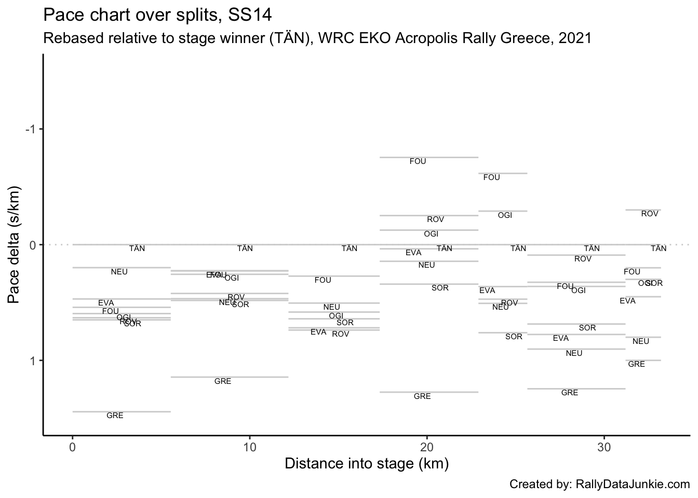
14.1.6 Ultimate Stage Comparisons
Split time comparisons relative to various ultimate stage time calculations.
These views provide various ways of comparing the performance of each driver to various ghost drivers:
- best recorded split time at each split (ultimate actuals): gives an estimate of how well the driver’s split times compare with each first ranked split time (time into stage at each split);
- fastest time going from one split to the next (ultimate sections): gives an estimate of how quickly each driver completed each split section relative to the quickest time recorded completing that split section (time taken to go from one split point to the next);
- accumulated ultimate sections times: gives and estimate of how quickly the driver is going relative to the fastest possible completion of the stage based on accumulated ultimate split section times.
14.1.6.1 Ultimate Actuals
Driver times compared to the first ranked recorded split time at each split:
| code | split_1 | split_2 | split_3 | split_4 | split_5 | split_6 | split_N |
|---|---|---|---|---|---|---|---|
| TÄN | 0.0 | 0.0 | 0.0 | 0.0 | 0.0 | 0.0 | 0.0 |
| FOU | 3.0 | 4.5 | 5.9 | 1.7 | 0.0 | 1.8 | 2.2 |
| OGI | 3.3 | 5.0 | 8.0 | 7.3 | 6.5 | 8.5 | 9.1 |
| ROV | 3.5 | 6.3 | 10.1 | 8.7 | 10.0 | 10.5 | 9.9 |
| EVA | 2.6 | 4.1 | 7.8 | 8.0 | 9.0 | 13.3 | 14.2 |
| NEU | 1.1 | 4.2 | 6.8 | 7.6 | 9.0 | 14.0 | 15.6 |
| SOR | 3.6 | 6.8 | 10.1 | 12.0 | 14.1 | 17.9 | 18.5 |
| GRE | 8.0 | 15.6 | 24.1 | 31.2 | 36.5 | 43.4 | 45.4 |
| ultimate | 0.0 | 0.0 | 0.0 | 0.0 | 0.0 | 0.0 | 0.0 |
14.1.6.2 Ultimate Sections
Split durations rebased relative to the fastest transit of each split section:
| code | split_1 | split_2 | split_3 | split_4 | split_5 | split_6 | split_N |
|---|---|---|---|---|---|---|---|
| TÄN | 0.0 | 0.0 | 0.0 | 4.2 | 1.7 | 0.0 | 0.6 |
| FOU | 3.0 | 1.5 | 1.4 | 0.0 | 0.0 | 1.8 | 1.0 |
| OGI | 3.3 | 1.7 | 3.0 | 3.5 | 0.9 | 2.0 | 1.2 |
| ROV | 3.5 | 2.8 | 3.8 | 2.8 | 3.0 | 0.5 | 0.0 |
| EVA | 2.6 | 1.5 | 3.7 | 4.4 | 2.7 | 4.3 | 1.5 |
| NEU | 1.1 | 3.1 | 2.6 | 5.0 | 3.1 | 5.0 | 2.2 |
| SOR | 3.6 | 3.2 | 3.3 | 6.1 | 3.8 | 3.8 | 1.2 |
| GRE | 8.0 | 7.6 | 8.5 | 11.3 | 7.0 | 6.9 | 2.6 |
| ultimate | 0.0 | 0.0 | 0.0 | 0.0 | 0.0 | 0.0 | 0.0 |
14.1.6.3 Ultimate Accumulated Sections
Actual split times relative to the accumulated ultimate split section times:
| code | split_1 | split_2 | split_3 | split_4 | split_5 | split_6 | split_N |
|---|---|---|---|---|---|---|---|
| TÄN | 0.0 | 0.0 | 0.0 | 4.2 | 5.9 | 5.9 | 6.5 |
| FOU | 3.0 | 4.5 | 5.9 | 5.9 | 5.9 | 7.7 | 8.7 |
| OGI | 3.3 | 5.0 | 8.0 | 11.5 | 12.4 | 14.4 | 15.6 |
| ROV | 3.5 | 6.3 | 10.1 | 12.9 | 15.9 | 16.4 | 16.4 |
| EVA | 2.6 | 4.1 | 7.8 | 12.2 | 14.9 | 19.2 | 20.7 |
| NEU | 1.1 | 4.2 | 6.8 | 11.8 | 14.9 | 19.9 | 22.1 |
| SOR | 3.6 | 6.8 | 10.1 | 16.2 | 20.0 | 23.8 | 25.0 |
| GRE | 8.0 | 15.6 | 24.1 | 35.4 | 42.4 | 49.3 | 51.9 |
| ultimate | 0.0 | 0.0 | 0.0 | 0.0 | 0.0 | 0.0 | 0.0 |
14.1.7 Split Section Pace Distribution
Distribution of pace values for each split section:
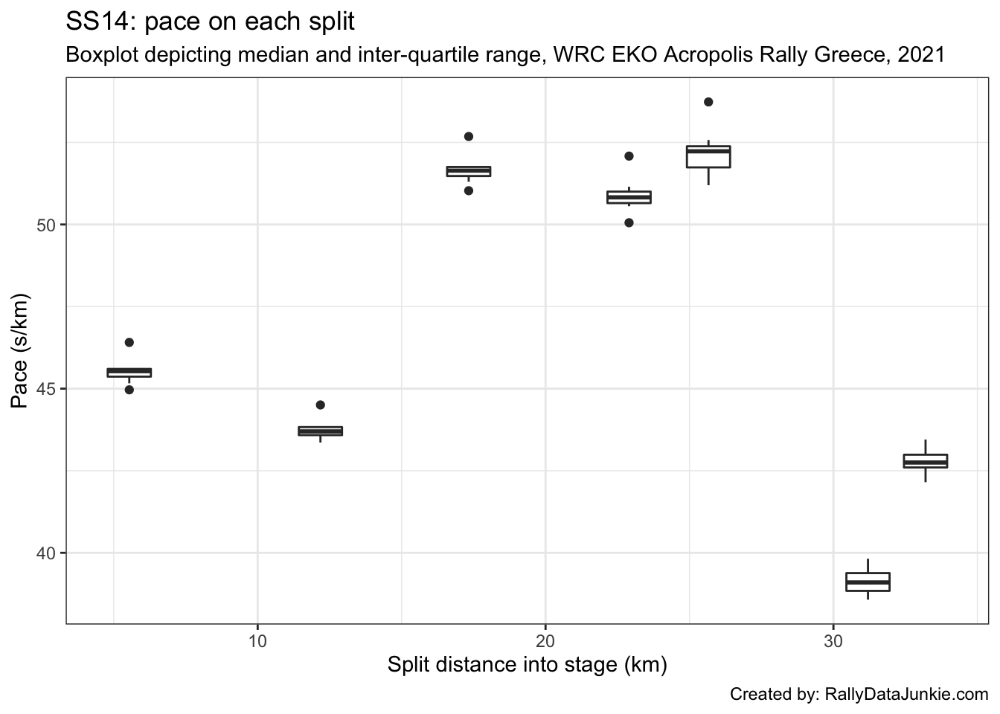
14.2 Text report
| code | identifier | entryId | stage | overall_pos | prev_position | retained_lead | lost_lead | gained_lead | overall_position_delta | overall_chase_code | overall_lead_code | overall_gap | overall_diff | overall_chase | overall_stage_pos | stage_position | stage_win | position | TimeInS | gap | diff | chase | chase_code | lead_code |
|---|---|---|---|---|---|---|---|---|---|---|---|---|---|---|---|---|---|---|---|---|---|---|---|---|
| TÄN | 8 | 23551 | SS14 | 2 | 2 | FALSE | FALSE | FALSE | 0 | OGI | ROV | 35.0 | 35.0 | 32.4 | 1 | 1 | TRUE | 1 | 1524.4 | 0.0 | 0.0 | 2.2 | FOU | NA |
| FOU | 16 | 23555 | SS14 | 6 | 7 | FALSE | FALSE | FALSE | 1 | EVA | GRE | 400.7 | 83.0 | 0.8 | 2 | 2 | FALSE | 2 | 1526.6 | 2.2 | 2.2 | 6.9 | OGI | TÄN |
| OGI | 1 | 23547 | SS14 | 3 | 3 | FALSE | FALSE | FALSE | 0 | SOR | TÄN | 67.4 | 32.4 | 100.5 | 3 | 3 | FALSE | 3 | 1533.5 | 9.1 | 6.9 | 0.8 | ROV | FOU |
| ROV | 69 | 23550 | SS14 | 1 | 1 | TRUE | FALSE | FALSE | 0 | TÄN | NA | 0.0 | NA | 35.0 | 4 | 4 | FALSE | 4 | 1534.3 | 9.9 | 0.8 | 4.3 | EVA | OGI |
| EVA | 33 | 23548 | SS14 | 7 | 6 | FALSE | FALSE | FALSE | -1 | NEU | FOU | 401.5 | 0.8 | 113.9 | 5 | 5 | FALSE | 5 | 1538.6 | 14.2 | 4.3 | 1.4 | NEU | ROV |
| NEU | 11 | 23549 | SS14 | 8 | 8 | FALSE | FALSE | FALSE | 0 | LOU | EVA | 515.4 | 113.9 | NA | 6 | 6 | FALSE | 6 | 1540.0 | 15.6 | 1.4 | 2.9 | SOR | EVA |
| SOR | 6 | 23554 | SS14 | 4 | 4 | FALSE | FALSE | FALSE | 0 | GRE | OGI | 167.9 | 100.5 | 149.8 | 7 | 7 | FALSE | 7 | 1542.9 | 18.5 | 2.9 | 26.9 | GRE | NEU |
| GRE | 44 | 23553 | SS14 | 5 | 5 | FALSE | FALSE | FALSE | 0 | FOU | SOR | 317.7 | 149.8 | 83.0 | 10 | 8 | FALSE | 8 | 1569.8 | 45.4 | 0.9 | NA | LOU | SOR |
| LOU | 7 | 23556 | SS14 | NA | NA | FALSE | FALSE | FALSE | NA | NA | NEU | NA | NA | NA | NA | 9 | FALSE | 9 | NA | NA | NA | NA | NA | GRE |
Stage report for SS14:
TÄN took the stage win and with a time of 1524.4s.
FOU was in second on stage, with a time of 1526.6s and moved up one place to sixth overall.
OGI was in third on stage, with a time of 1533.5s .
ROV took fourth on stage, with a time of 1534.3s and retained overall lead of the rally, just 0.8s off OGI.
EVA was in fifth position on stage, 14.2s behind TÄN in a time of 1538.6s dropped one place to seventh overall.
NEU was in sixth position on stage, with a time of 1540.0s .
SOR was in seventh place on stage, with a time of 1542.9s .
GRE was in tenth place on stage, with a time of 1569.8s , only 0.9s behind SOR.
14.3 Driver Report, SS14 - OGI
OGI was in third on stage, with a time of 1533.5s .
Stage report for OGI.
| Pos | Car | Code | Time (s) | Gap | Diff |
|---|---|---|---|---|---|
| 1 | 8 | TÄN | -9.1 | -9.1 | 0.0 |
| 2 | 16 | FOU | -6.9 | -6.9 | 2.2 |
| 3 | 1 | OGI | 0.0 | 0.0 | 6.9 |
| 4 | 69 | ROV | 0.8 | 0.8 | 0.8 |
| 5 | 33 | EVA | 5.1 | 5.1 | 4.3 |
| 6 | 11 | NEU | 6.5 | 6.5 | 1.4 |
| 7 | 6 | SOR | 9.4 | 9.4 | 2.9 |
| 10 | 44 | GRE | 36.3 | 36.3 | 0.9 |
14.3.1 Rebased Split Times
OGI’s delta at each split compared to other drivers.
| code | split_1 | split_2 | split_3 | split_4 | split_5 | split_6 | split_N |
|---|---|---|---|---|---|---|---|
| TÄN | -3.3 | -5.0 | -8.0 | -7.3 | -6.5 | -8.5 | -9.1 |
| FOU | -0.3 | -0.5 | -2.1 | -5.6 | -6.5 | -6.7 | -6.9 |
| OGI | 0.0 | 0.0 | 0.0 | 0.0 | 0.0 | 0.0 | 0.0 |
| ROV | 0.2 | 1.3 | 2.1 | 1.4 | 3.5 | 2.0 | 0.8 |
| EVA | -0.7 | -0.9 | -0.2 | 0.7 | 2.5 | 4.8 | 5.1 |
| NEU | -2.2 | -0.8 | -1.2 | 0.3 | 2.5 | 5.5 | 6.5 |
| SOR | 0.3 | 1.8 | 2.1 | 4.7 | 7.6 | 9.4 | 9.4 |
| GRE | 4.7 | 10.6 | 16.1 | 23.9 | 30.0 | 34.9 | 36.3 |
14.3.2 Off-the-Pace Chart
Accumulated stage time deltas at each split:
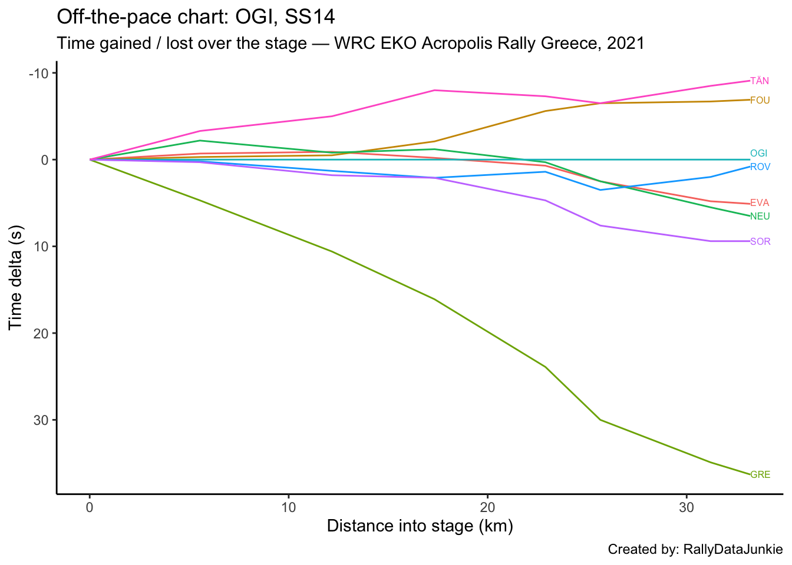
14.3.3 Within-Split Duration Deltas
OGI’s delta in time to complete each split section compared to other drivers:
| code | split_1 | split_2 | split_3 | split_4 | split_5 | split_6 | split_N |
|---|---|---|---|---|---|---|---|
| TÄN | -3.3 | -1.7 | -3.0 | 0.7 | 0.8 | -2.0 | -0.6 |
| FOU | -0.3 | -0.2 | -1.6 | -3.5 | -0.9 | -0.2 | -0.2 |
| OGI | 0.0 | 0.0 | 0.0 | 0.0 | 0.0 | 0.0 | 0.0 |
| ROV | 0.2 | 1.1 | 0.8 | -0.7 | 2.1 | -1.5 | -1.2 |
| EVA | -0.7 | -0.2 | 0.7 | 0.9 | 1.8 | 2.3 | 0.3 |
| NEU | -2.2 | 1.4 | -0.4 | 1.5 | 2.2 | 3.0 | 1.0 |
| SOR | 0.3 | 1.5 | 0.3 | 2.6 | 2.9 | 1.8 | 0.0 |
| GRE | 4.7 | 5.9 | 5.5 | 7.8 | 6.1 | 4.9 | 1.4 |
14.3.4 Within-Split Pace Deltas
| code | split_1 | split_2 | split_3 | split_4 | split_5 | split_6 | split_N |
|---|---|---|---|---|---|---|---|
| TÄN | -0.60 | -0.26 | -0.58 | 0.13 | 0.29 | -0.36 | -0.30 |
| FOU | -0.05 | -0.03 | -0.31 | -0.63 | -0.33 | -0.04 | -0.10 |
| OGI | 0.00 | 0.00 | 0.00 | 0.00 | 0.00 | 0.00 | 0.00 |
| ROV | 0.04 | 0.17 | 0.16 | -0.13 | 0.76 | -0.27 | -0.60 |
| EVA | -0.13 | -0.03 | 0.14 | 0.16 | 0.65 | 0.42 | 0.15 |
| NEU | -0.40 | 0.21 | -0.08 | 0.27 | 0.80 | 0.54 | 0.50 |
| SOR | 0.05 | 0.23 | 0.06 | 0.47 | 1.05 | 0.32 | 0.00 |
| GRE | 0.85 | 0.89 | 1.07 | 1.40 | 2.21 | 0.88 | 0.70 |
14.3.5 Within-Split Pace Map
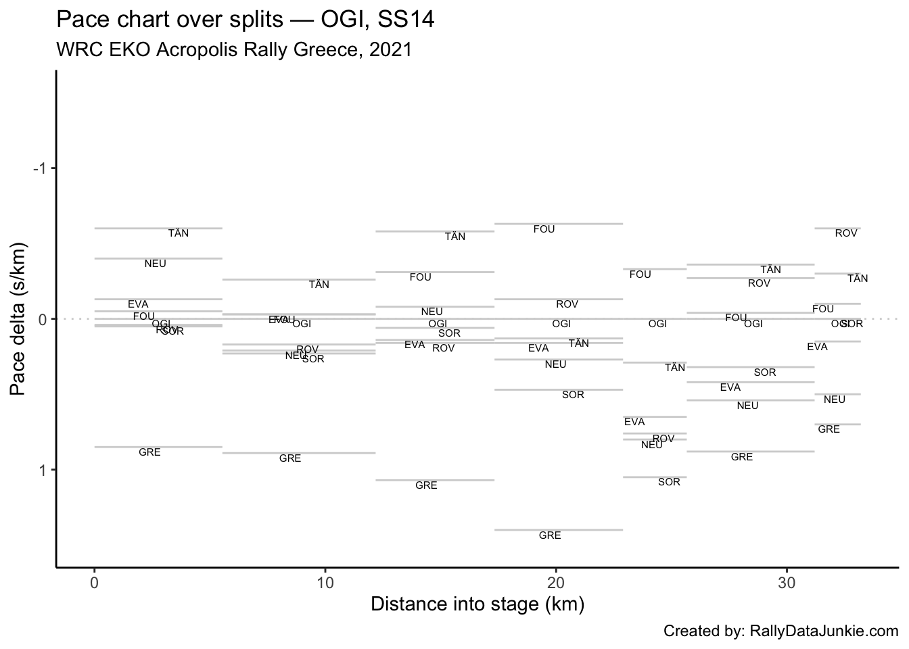
14.4 Driver Report, SS14 - EVA
EVA was in fifth position on stage, 14.2s behind TÄN in a time of 1538.6s dropped one place to seventh overall.
Stage report for EVA.
| Pos | Car | Code | Time (s) | Gap | Diff |
|---|---|---|---|---|---|
| 1 | 8 | TÄN | -14.2 | -14.2 | 0.0 |
| 2 | 16 | FOU | -12.0 | -12.0 | 2.2 |
| 3 | 1 | OGI | -5.1 | -5.1 | 6.9 |
| 4 | 69 | ROV | -4.3 | -4.3 | 0.8 |
| 5 | 33 | EVA | 0.0 | 0.0 | 4.3 |
| 6 | 11 | NEU | 1.4 | 1.4 | 1.4 |
| 7 | 6 | SOR | 4.3 | 4.3 | 2.9 |
| 10 | 44 | GRE | 31.2 | 31.2 | 0.9 |
14.4.1 Rebased Split Times
EVA’s delta at each split compared to other drivers.
| code | split_1 | split_2 | split_3 | split_4 | split_5 | split_6 | split_N |
|---|---|---|---|---|---|---|---|
| TÄN | -2.6 | -4.1 | -7.8 | -8.0 | -9.0 | -13.3 | -14.2 |
| FOU | 0.4 | 0.4 | -1.9 | -6.3 | -9.0 | -11.5 | -12.0 |
| OGI | 0.7 | 0.9 | 0.2 | -0.7 | -2.5 | -4.8 | -5.1 |
| ROV | 0.9 | 2.2 | 2.3 | 0.7 | 1.0 | -2.8 | -4.3 |
| EVA | 0.0 | 0.0 | 0.0 | 0.0 | 0.0 | 0.0 | 0.0 |
| NEU | -1.5 | 0.1 | -1.0 | -0.4 | 0.0 | 0.7 | 1.4 |
| SOR | 1.0 | 2.7 | 2.3 | 4.0 | 5.1 | 4.6 | 4.3 |
| GRE | 5.4 | 11.5 | 16.3 | 23.2 | 27.5 | 30.1 | 31.2 |
14.4.2 Off-the-Pace Chart
Accumulated stage time deltas at each split:

14.4.3 Within-Split Duration Deltas
EVA’s delta in time to complete each split section compared to other drivers:
| code | split_1 | split_2 | split_3 | split_4 | split_5 | split_6 | split_N |
|---|---|---|---|---|---|---|---|
| TÄN | -2.6 | -1.5 | -3.7 | -0.2 | -1.0 | -4.3 | -0.9 |
| FOU | 0.4 | 0.0 | -2.3 | -4.4 | -2.7 | -2.5 | -0.5 |
| OGI | 0.7 | 0.2 | -0.7 | -0.9 | -1.8 | -2.3 | -0.3 |
| ROV | 0.9 | 1.3 | 0.1 | -1.6 | 0.3 | -3.8 | -1.5 |
| EVA | 0.0 | 0.0 | 0.0 | 0.0 | 0.0 | 0.0 | 0.0 |
| NEU | -1.5 | 1.6 | -1.1 | 0.6 | 0.4 | 0.7 | 0.7 |
| SOR | 1.0 | 1.7 | -0.4 | 1.7 | 1.1 | -0.5 | -0.3 |
| GRE | 5.4 | 6.1 | 4.8 | 6.9 | 4.3 | 2.6 | 1.1 |
14.4.4 Within-Split Pace Deltas
| code | split_1 | split_2 | split_3 | split_4 | split_5 | split_6 | split_N |
|---|---|---|---|---|---|---|---|
| TÄN | -0.47 | -0.23 | -0.72 | -0.04 | -0.36 | -0.78 | -0.45 |
| FOU | 0.07 | 0.00 | -0.45 | -0.79 | -0.98 | -0.45 | -0.25 |
| OGI | 0.13 | 0.03 | -0.14 | -0.16 | -0.65 | -0.42 | -0.15 |
| ROV | 0.16 | 0.20 | 0.02 | -0.29 | 0.11 | -0.69 | -0.75 |
| EVA | 0.00 | 0.00 | 0.00 | 0.00 | 0.00 | 0.00 | 0.00 |
| NEU | -0.27 | 0.24 | -0.21 | 0.11 | 0.14 | 0.13 | 0.35 |
| SOR | 0.18 | 0.26 | -0.08 | 0.31 | 0.40 | -0.09 | -0.15 |
| GRE | 0.97 | 0.92 | 0.93 | 1.24 | 1.56 | 0.47 | 0.55 |
14.4.5 Within-Split Pace Map
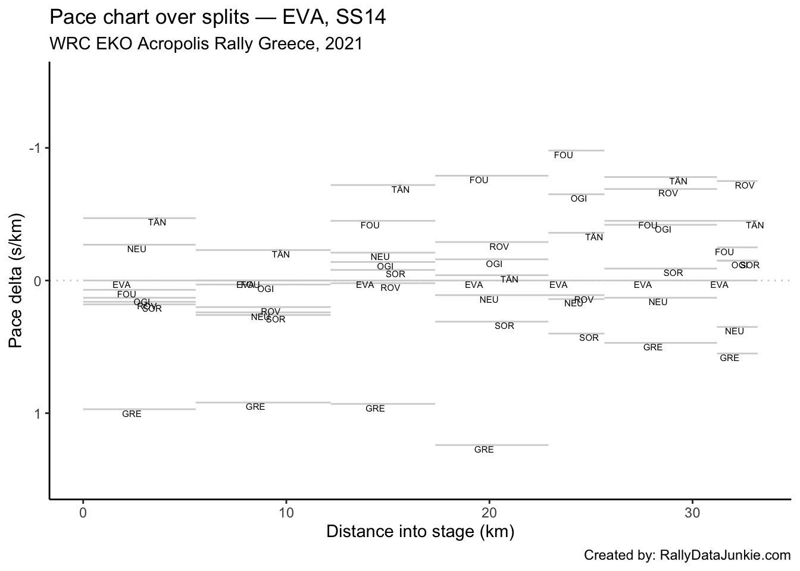
14.5 Driver Report, SS14 - NEU
NEU was in sixth position on stage, with a time of 1540.0s .
Stage report for NEU.
| Pos | Car | Code | Time (s) | Gap | Diff |
|---|---|---|---|---|---|
| 1 | 8 | TÄN | -15.6 | -15.6 | 0.0 |
| 2 | 16 | FOU | -13.4 | -13.4 | 2.2 |
| 3 | 1 | OGI | -6.5 | -6.5 | 6.9 |
| 4 | 69 | ROV | -5.7 | -5.7 | 0.8 |
| 5 | 33 | EVA | -1.4 | -1.4 | 4.3 |
| 6 | 11 | NEU | 0.0 | 0.0 | 1.4 |
| 7 | 6 | SOR | 2.9 | 2.9 | 2.9 |
| 10 | 44 | GRE | 29.8 | 29.8 | 0.9 |
14.5.1 Rebased Split Times
NEU’s delta at each split compared to other drivers.
| code | split_1 | split_2 | split_3 | split_4 | split_5 | split_6 | split_N |
|---|---|---|---|---|---|---|---|
| TÄN | -1.1 | -4.2 | -6.8 | -7.6 | -9.0 | -14.0 | -15.6 |
| FOU | 1.9 | 0.3 | -0.9 | -5.9 | -9.0 | -12.2 | -13.4 |
| OGI | 2.2 | 0.8 | 1.2 | -0.3 | -2.5 | -5.5 | -6.5 |
| ROV | 2.4 | 2.1 | 3.3 | 1.1 | 1.0 | -3.5 | -5.7 |
| EVA | 1.5 | -0.1 | 1.0 | 0.4 | 0.0 | -0.7 | -1.4 |
| NEU | 0.0 | 0.0 | 0.0 | 0.0 | 0.0 | 0.0 | 0.0 |
| SOR | 2.5 | 2.6 | 3.3 | 4.4 | 5.1 | 3.9 | 2.9 |
| GRE | 6.9 | 11.4 | 17.3 | 23.6 | 27.5 | 29.4 | 29.8 |
14.5.2 Off-the-Pace Chart
Accumulated stage time deltas at each split:
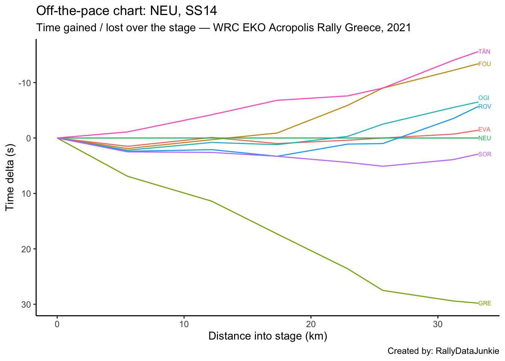
14.5.3 Within-Split Duration Deltas
NEU’s delta in time to complete each split section compared to other drivers:
| code | split_1 | split_2 | split_3 | split_4 | split_5 | split_6 | split_N |
|---|---|---|---|---|---|---|---|
| TÄN | -1.1 | -3.1 | -2.6 | -0.8 | -1.4 | -5.0 | -1.6 |
| FOU | 1.9 | -1.6 | -1.2 | -5.0 | -3.1 | -3.2 | -1.2 |
| OGI | 2.2 | -1.4 | 0.4 | -1.5 | -2.2 | -3.0 | -1.0 |
| ROV | 2.4 | -0.3 | 1.2 | -2.2 | -0.1 | -4.5 | -2.2 |
| EVA | 1.5 | -1.6 | 1.1 | -0.6 | -0.4 | -0.7 | -0.7 |
| NEU | 0.0 | 0.0 | 0.0 | 0.0 | 0.0 | 0.0 | 0.0 |
| SOR | 2.5 | 0.1 | 0.7 | 1.1 | 0.7 | -1.2 | -1.0 |
| GRE | 6.9 | 4.5 | 5.9 | 6.3 | 3.9 | 1.9 | 0.4 |
14.5.4 Within-Split Pace Deltas
| code | split_1 | split_2 | split_3 | split_4 | split_5 | split_6 | split_N |
|---|---|---|---|---|---|---|---|
| TÄN | -0.20 | -0.47 | -0.50 | -0.14 | -0.51 | -0.90 | -0.80 |
| FOU | 0.34 | -0.24 | -0.23 | -0.90 | -1.12 | -0.58 | -0.60 |
| OGI | 0.40 | -0.21 | 0.08 | -0.27 | -0.80 | -0.54 | -0.50 |
| ROV | 0.43 | -0.05 | 0.23 | -0.39 | -0.04 | -0.81 | -1.10 |
| EVA | 0.27 | -0.24 | 0.21 | -0.11 | -0.14 | -0.13 | -0.35 |
| NEU | 0.00 | 0.00 | 0.00 | 0.00 | 0.00 | 0.00 | 0.00 |
| SOR | 0.45 | 0.02 | 0.14 | 0.20 | 0.25 | -0.22 | -0.50 |
| GRE | 1.25 | 0.68 | 1.15 | 1.13 | 1.41 | 0.34 | 0.20 |
14.5.5 Within-Split Pace Map
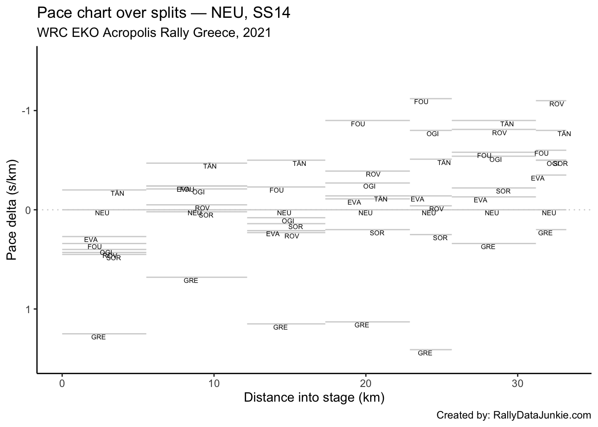
14.6 Driver Report, SS14 - ROV
ROV took fourth on stage, with a time of 1534.3s and retained overall lead of the rally, just 0.8s off OGI.
Stage report for ROV.
| Pos | Car | Code | Time (s) | Gap | Diff |
|---|---|---|---|---|---|
| 1 | 8 | TÄN | -9.9 | -9.9 | 0.0 |
| 2 | 16 | FOU | -7.7 | -7.7 | 2.2 |
| 3 | 1 | OGI | -0.8 | -0.8 | 6.9 |
| 4 | 69 | ROV | 0.0 | 0.0 | 0.8 |
| 5 | 33 | EVA | 4.3 | 4.3 | 4.3 |
| 6 | 11 | NEU | 5.7 | 5.7 | 1.4 |
| 7 | 6 | SOR | 8.6 | 8.6 | 2.9 |
| 10 | 44 | GRE | 35.5 | 35.5 | 0.9 |
14.6.1 Rebased Split Times
ROV’s delta at each split compared to other drivers.
| code | split_1 | split_2 | split_3 | split_4 | split_5 | split_6 | split_N |
|---|---|---|---|---|---|---|---|
| TÄN | -3.5 | -6.3 | -10.1 | -8.7 | -10.0 | -10.5 | -9.9 |
| FOU | -0.5 | -1.8 | -4.2 | -7.0 | -10.0 | -8.7 | -7.7 |
| OGI | -0.2 | -1.3 | -2.1 | -1.4 | -3.5 | -2.0 | -0.8 |
| ROV | 0.0 | 0.0 | 0.0 | 0.0 | 0.0 | 0.0 | 0.0 |
| EVA | -0.9 | -2.2 | -2.3 | -0.7 | -1.0 | 2.8 | 4.3 |
| NEU | -2.4 | -2.1 | -3.3 | -1.1 | -1.0 | 3.5 | 5.7 |
| SOR | 0.1 | 0.5 | 0.0 | 3.3 | 4.1 | 7.4 | 8.6 |
| GRE | 4.5 | 9.3 | 14.0 | 22.5 | 26.5 | 32.9 | 35.5 |
14.6.2 Off-the-Pace Chart
Accumulated stage time deltas at each split:
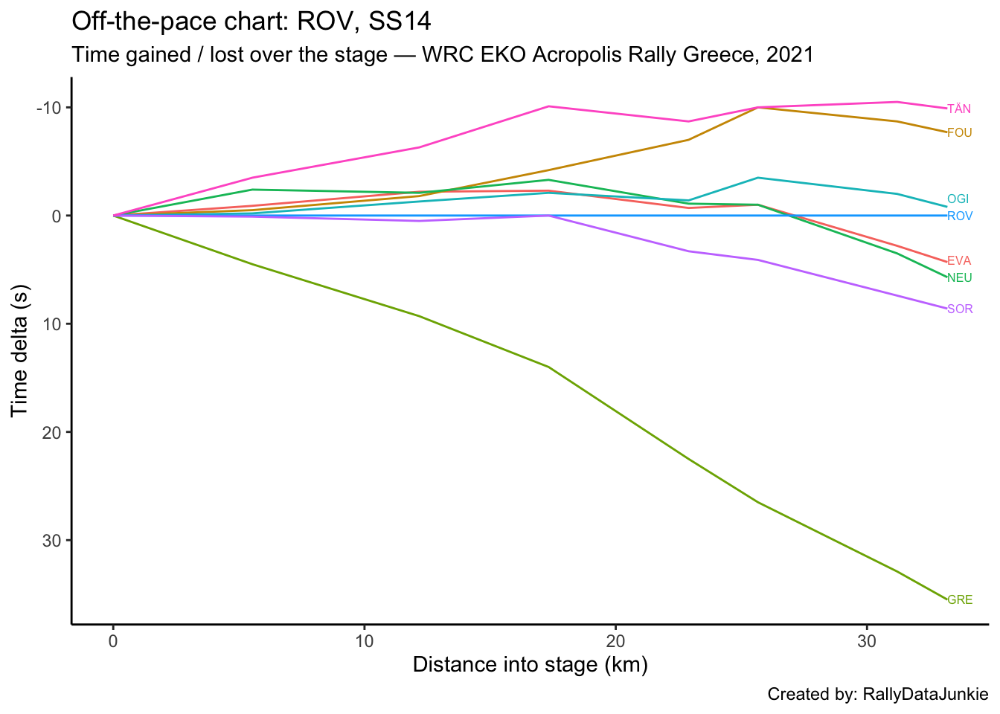
14.6.3 Within-Split Duration Deltas
ROV’s delta in time to complete each split section compared to other drivers:
| code | split_1 | split_2 | split_3 | split_4 | split_5 | split_6 | split_N |
|---|---|---|---|---|---|---|---|
| TÄN | -3.5 | -2.8 | -3.8 | 1.4 | -1.3 | -0.5 | 0.6 |
| FOU | -0.5 | -1.3 | -2.4 | -2.8 | -3.0 | 1.3 | 1.0 |
| OGI | -0.2 | -1.1 | -0.8 | 0.7 | -2.1 | 1.5 | 1.2 |
| ROV | 0.0 | 0.0 | 0.0 | 0.0 | 0.0 | 0.0 | 0.0 |
| EVA | -0.9 | -1.3 | -0.1 | 1.6 | -0.3 | 3.8 | 1.5 |
| NEU | -2.4 | 0.3 | -1.2 | 2.2 | 0.1 | 4.5 | 2.2 |
| SOR | 0.1 | 0.4 | -0.5 | 3.3 | 0.8 | 3.3 | 1.2 |
| GRE | 4.5 | 4.8 | 4.7 | 8.5 | 4.0 | 6.4 | 2.6 |
14.6.4 Within-Split Pace Deltas
| code | split_1 | split_2 | split_3 | split_4 | split_5 | split_6 | split_N |
|---|---|---|---|---|---|---|---|
| TÄN | -0.63 | -0.42 | -0.74 | 0.25 | -0.47 | -0.09 | 0.30 |
| FOU | -0.09 | -0.20 | -0.47 | -0.50 | -1.09 | 0.23 | 0.50 |
| OGI | -0.04 | -0.17 | -0.16 | 0.13 | -0.76 | 0.27 | 0.60 |
| ROV | 0.00 | 0.00 | 0.00 | 0.00 | 0.00 | 0.00 | 0.00 |
| EVA | -0.16 | -0.20 | -0.02 | 0.29 | -0.11 | 0.69 | 0.75 |
| NEU | -0.43 | 0.05 | -0.23 | 0.39 | 0.04 | 0.81 | 1.10 |
| SOR | 0.02 | 0.06 | -0.10 | 0.59 | 0.29 | 0.60 | 0.60 |
| GRE | 0.81 | 0.72 | 0.91 | 1.53 | 1.45 | 1.16 | 1.30 |
14.6.5 Within-Split Pace Map
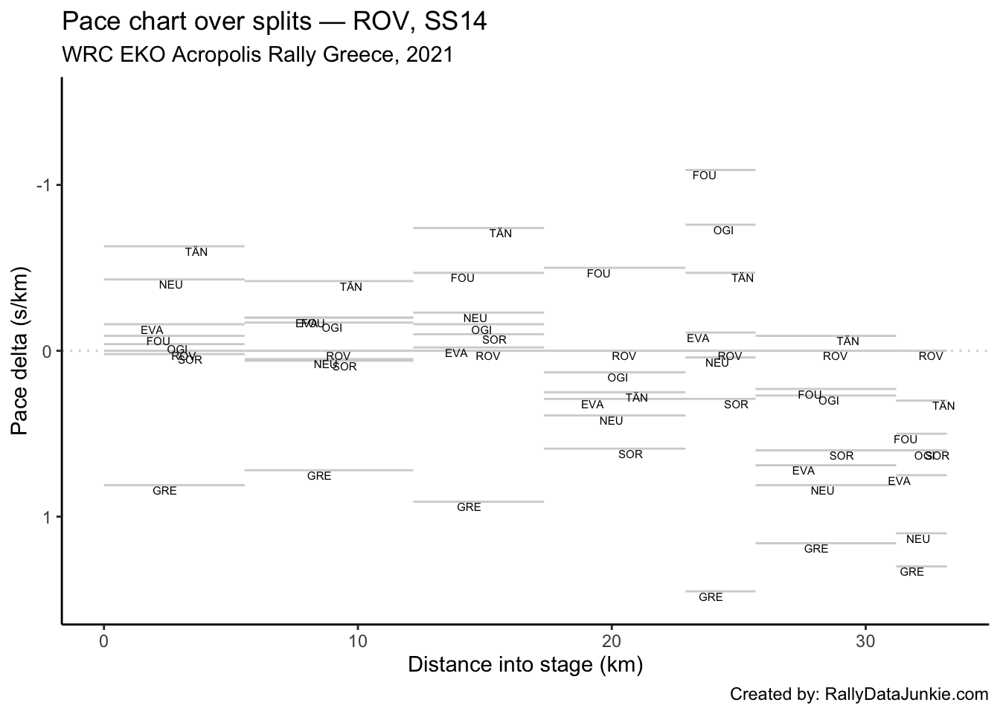
14.7 Driver Report, SS14 - TÄN
TÄN took the stage win and with a time of 1524.4s.
Stage report for TÄN.
| Pos | Car | Code | Time (s) | Gap | Diff |
|---|---|---|---|---|---|
| 1 | 8 | TÄN | 0.0 | 0.0 | 0.0 |
| 2 | 16 | FOU | 2.2 | 2.2 | 2.2 |
| 3 | 1 | OGI | 9.1 | 9.1 | 6.9 |
| 4 | 69 | ROV | 9.9 | 9.9 | 0.8 |
| 5 | 33 | EVA | 14.2 | 14.2 | 4.3 |
| 6 | 11 | NEU | 15.6 | 15.6 | 1.4 |
| 7 | 6 | SOR | 18.5 | 18.5 | 2.9 |
| 10 | 44 | GRE | 45.4 | 45.4 | 0.9 |
14.7.1 Rebased Split Times
TÄN’s delta at each split compared to other drivers.
| code | split_1 | split_2 | split_3 | split_4 | split_5 | split_6 | split_N |
|---|---|---|---|---|---|---|---|
| TÄN | 0.0 | 0.0 | 0.0 | 0.0 | 0.0 | 0.0 | 0.0 |
| FOU | 3.0 | 4.5 | 5.9 | 1.7 | 0.0 | 1.8 | 2.2 |
| OGI | 3.3 | 5.0 | 8.0 | 7.3 | 6.5 | 8.5 | 9.1 |
| ROV | 3.5 | 6.3 | 10.1 | 8.7 | 10.0 | 10.5 | 9.9 |
| EVA | 2.6 | 4.1 | 7.8 | 8.0 | 9.0 | 13.3 | 14.2 |
| NEU | 1.1 | 4.2 | 6.8 | 7.6 | 9.0 | 14.0 | 15.6 |
| SOR | 3.6 | 6.8 | 10.1 | 12.0 | 14.1 | 17.9 | 18.5 |
| GRE | 8.0 | 15.6 | 24.1 | 31.2 | 36.5 | 43.4 | 45.4 |
14.7.2 Off-the-Pace Chart
Accumulated stage time deltas at each split:
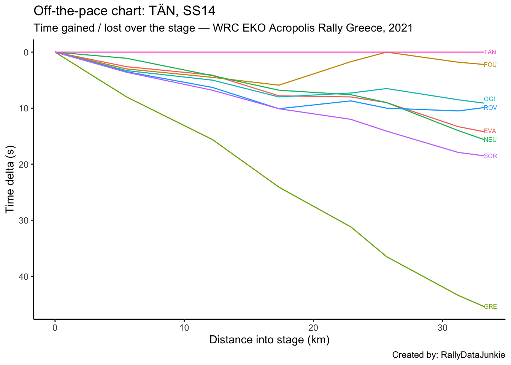
14.7.3 Within-Split Duration Deltas
TÄN’s delta in time to complete each split section compared to other drivers:
| code | split_1 | split_2 | split_3 | split_4 | split_5 | split_6 | split_N |
|---|---|---|---|---|---|---|---|
| TÄN | 0.0 | 0.0 | 0.0 | 0.0 | 0.0 | 0.0 | 0.0 |
| FOU | 3.0 | 1.5 | 1.4 | -4.2 | -1.7 | 1.8 | 0.4 |
| OGI | 3.3 | 1.7 | 3.0 | -0.7 | -0.8 | 2.0 | 0.6 |
| ROV | 3.5 | 2.8 | 3.8 | -1.4 | 1.3 | 0.5 | -0.6 |
| EVA | 2.6 | 1.5 | 3.7 | 0.2 | 1.0 | 4.3 | 0.9 |
| NEU | 1.1 | 3.1 | 2.6 | 0.8 | 1.4 | 5.0 | 1.6 |
| SOR | 3.6 | 3.2 | 3.3 | 1.9 | 2.1 | 3.8 | 0.6 |
| GRE | 8.0 | 7.6 | 8.5 | 7.1 | 5.3 | 6.9 | 2.0 |
14.7.4 Within-Split Pace Deltas
| code | split_1 | split_2 | split_3 | split_4 | split_5 | split_6 | split_N |
|---|---|---|---|---|---|---|---|
| TÄN | 0.00 | 0.00 | 0.00 | 0.00 | 0.00 | 0.00 | 0.00 |
| FOU | 0.54 | 0.23 | 0.27 | -0.75 | -0.62 | 0.32 | 0.20 |
| OGI | 0.60 | 0.26 | 0.58 | -0.13 | -0.29 | 0.36 | 0.30 |
| ROV | 0.63 | 0.42 | 0.74 | -0.25 | 0.47 | 0.09 | -0.30 |
| EVA | 0.47 | 0.23 | 0.72 | 0.04 | 0.36 | 0.78 | 0.45 |
| NEU | 0.20 | 0.47 | 0.50 | 0.14 | 0.51 | 0.90 | 0.80 |
| SOR | 0.65 | 0.48 | 0.64 | 0.34 | 0.76 | 0.69 | 0.30 |
| GRE | 1.44 | 1.14 | 1.65 | 1.27 | 1.92 | 1.25 | 1.00 |
14.7.5 Within-Split Pace Map
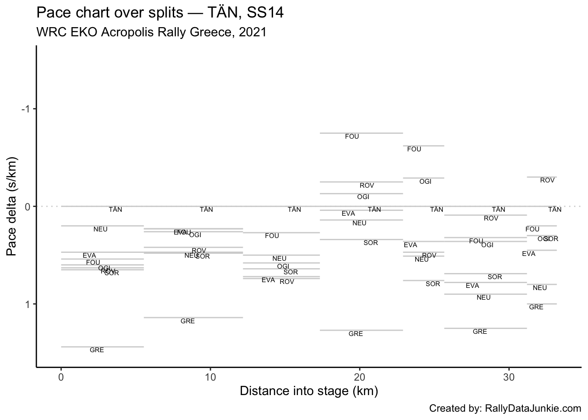
14.8 Driver Report, SS14 - KAT
No stage report for KAT.
14.9 Driver Report, SS14 - GRE
GRE was in tenth place on stage, with a time of 1569.8s , only 0.9s behind SOR.
Stage report for GRE.
| Pos | Car | Code | Time (s) | Gap | Diff |
|---|---|---|---|---|---|
| 1 | 8 | TÄN | -45.4 | -45.4 | 0.0 |
| 2 | 16 | FOU | -43.2 | -43.2 | 2.2 |
| 3 | 1 | OGI | -36.3 | -36.3 | 6.9 |
| 4 | 69 | ROV | -35.5 | -35.5 | 0.8 |
| 5 | 33 | EVA | -31.2 | -31.2 | 4.3 |
| 6 | 11 | NEU | -29.8 | -29.8 | 1.4 |
| 7 | 6 | SOR | -26.9 | -26.9 | 2.9 |
| 10 | 44 | GRE | 0.0 | 0.0 | 0.9 |
14.9.1 Rebased Split Times
GRE’s delta at each split compared to other drivers.
| code | split_1 | split_2 | split_3 | split_4 | split_5 | split_6 | split_N |
|---|---|---|---|---|---|---|---|
| TÄN | -8.0 | -15.6 | -24.1 | -31.2 | -36.5 | -43.4 | -45.4 |
| FOU | -5.0 | -11.1 | -18.2 | -29.5 | -36.5 | -41.6 | -43.2 |
| OGI | -4.7 | -10.6 | -16.1 | -23.9 | -30.0 | -34.9 | -36.3 |
| ROV | -4.5 | -9.3 | -14.0 | -22.5 | -26.5 | -32.9 | -35.5 |
| EVA | -5.4 | -11.5 | -16.3 | -23.2 | -27.5 | -30.1 | -31.2 |
| NEU | -6.9 | -11.4 | -17.3 | -23.6 | -27.5 | -29.4 | -29.8 |
| SOR | -4.4 | -8.8 | -14.0 | -19.2 | -22.4 | -25.5 | -26.9 |
| GRE | 0.0 | 0.0 | 0.0 | 0.0 | 0.0 | 0.0 | 0.0 |
14.9.2 Off-the-Pace Chart
Accumulated stage time deltas at each split:
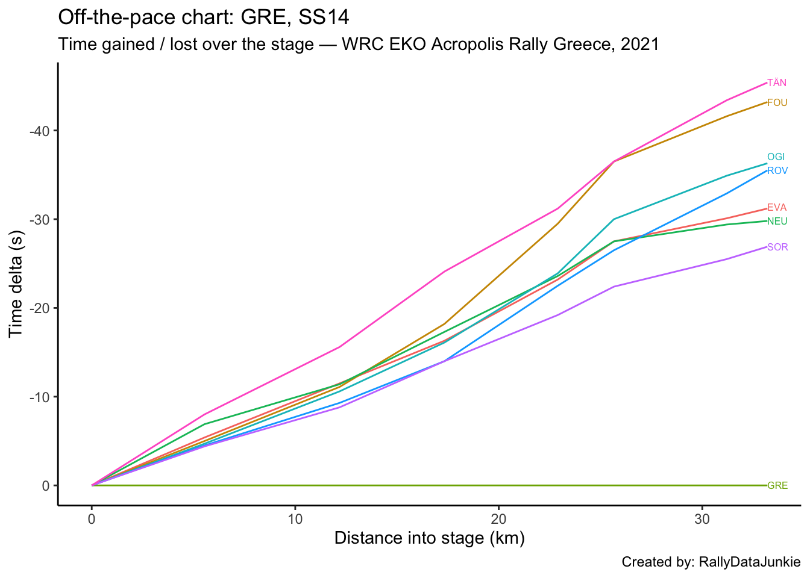
14.9.3 Within-Split Duration Deltas
GRE’s delta in time to complete each split section compared to other drivers:
| code | split_1 | split_2 | split_3 | split_4 | split_5 | split_6 | split_N |
|---|---|---|---|---|---|---|---|
| TÄN | -8.0 | -7.6 | -8.5 | -7.1 | -5.3 | -6.9 | -2.0 |
| FOU | -5.0 | -6.1 | -7.1 | -11.3 | -7.0 | -5.1 | -1.6 |
| OGI | -4.7 | -5.9 | -5.5 | -7.8 | -6.1 | -4.9 | -1.4 |
| ROV | -4.5 | -4.8 | -4.7 | -8.5 | -4.0 | -6.4 | -2.6 |
| EVA | -5.4 | -6.1 | -4.8 | -6.9 | -4.3 | -2.6 | -1.1 |
| NEU | -6.9 | -4.5 | -5.9 | -6.3 | -3.9 | -1.9 | -0.4 |
| SOR | -4.4 | -4.4 | -5.2 | -5.2 | -3.2 | -3.1 | -1.4 |
| GRE | 0.0 | 0.0 | 0.0 | 0.0 | 0.0 | 0.0 | 0.0 |
14.9.4 Within-Split Pace Deltas
| code | split_1 | split_2 | split_3 | split_4 | split_5 | split_6 | split_N |
|---|---|---|---|---|---|---|---|
| TÄN | -1.44 | -1.14 | -1.65 | -1.27 | -1.92 | -1.25 | -1.00 |
| FOU | -0.90 | -0.92 | -1.38 | -2.03 | -2.54 | -0.92 | -0.80 |
| OGI | -0.85 | -0.89 | -1.07 | -1.40 | -2.21 | -0.88 | -0.70 |
| ROV | -0.81 | -0.72 | -0.91 | -1.53 | -1.45 | -1.16 | -1.30 |
| EVA | -0.97 | -0.92 | -0.93 | -1.24 | -1.56 | -0.47 | -0.55 |
| NEU | -1.25 | -0.68 | -1.15 | -1.13 | -1.41 | -0.34 | -0.20 |
| SOR | -0.79 | -0.66 | -1.01 | -0.93 | -1.16 | -0.56 | -0.70 |
| GRE | 0.00 | 0.00 | 0.00 | 0.00 | 0.00 | 0.00 | 0.00 |
14.9.5 Within-Split Pace Map
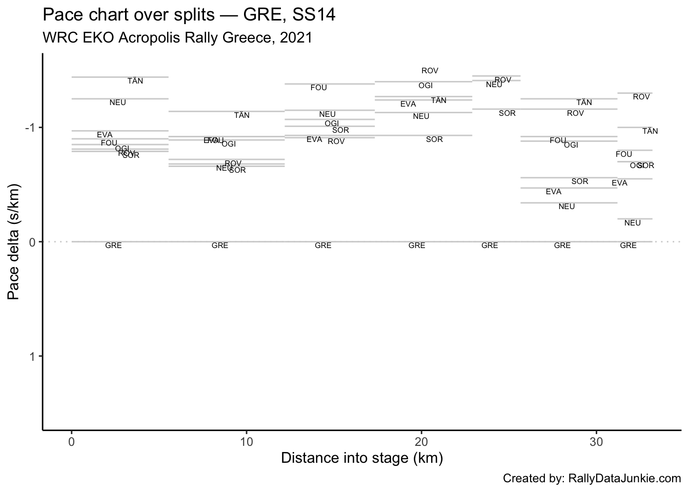
14.10 Driver Report, SS14 - SOR
SOR was in seventh place on stage, with a time of 1542.9s .
Stage report for SOR.
| Pos | Car | Code | Time (s) | Gap | Diff |
|---|---|---|---|---|---|
| 1 | 8 | TÄN | -18.5 | -18.5 | 0.0 |
| 2 | 16 | FOU | -16.3 | -16.3 | 2.2 |
| 3 | 1 | OGI | -9.4 | -9.4 | 6.9 |
| 4 | 69 | ROV | -8.6 | -8.6 | 0.8 |
| 5 | 33 | EVA | -4.3 | -4.3 | 4.3 |
| 6 | 11 | NEU | -2.9 | -2.9 | 1.4 |
| 7 | 6 | SOR | 0.0 | 0.0 | 2.9 |
| 10 | 44 | GRE | 26.9 | 26.9 | 0.9 |
14.10.1 Rebased Split Times
SOR’s delta at each split compared to other drivers.
| code | split_1 | split_2 | split_3 | split_4 | split_5 | split_6 | split_N |
|---|---|---|---|---|---|---|---|
| TÄN | -3.6 | -6.8 | -10.1 | -12.0 | -14.1 | -17.9 | -18.5 |
| FOU | -0.6 | -2.3 | -4.2 | -10.3 | -14.1 | -16.1 | -16.3 |
| OGI | -0.3 | -1.8 | -2.1 | -4.7 | -7.6 | -9.4 | -9.4 |
| ROV | -0.1 | -0.5 | 0.0 | -3.3 | -4.1 | -7.4 | -8.6 |
| EVA | -1.0 | -2.7 | -2.3 | -4.0 | -5.1 | -4.6 | -4.3 |
| NEU | -2.5 | -2.6 | -3.3 | -4.4 | -5.1 | -3.9 | -2.9 |
| SOR | 0.0 | 0.0 | 0.0 | 0.0 | 0.0 | 0.0 | 0.0 |
| GRE | 4.4 | 8.8 | 14.0 | 19.2 | 22.4 | 25.5 | 26.9 |
14.10.2 Off-the-Pace Chart
Accumulated stage time deltas at each split:

14.10.3 Within-Split Duration Deltas
SOR’s delta in time to complete each split section compared to other drivers:
| code | split_1 | split_2 | split_3 | split_4 | split_5 | split_6 | split_N |
|---|---|---|---|---|---|---|---|
| TÄN | -3.6 | -3.2 | -3.3 | -1.9 | -2.1 | -3.8 | -0.6 |
| FOU | -0.6 | -1.7 | -1.9 | -6.1 | -3.8 | -2.0 | -0.2 |
| OGI | -0.3 | -1.5 | -0.3 | -2.6 | -2.9 | -1.8 | 0.0 |
| ROV | -0.1 | -0.4 | 0.5 | -3.3 | -0.8 | -3.3 | -1.2 |
| EVA | -1.0 | -1.7 | 0.4 | -1.7 | -1.1 | 0.5 | 0.3 |
| NEU | -2.5 | -0.1 | -0.7 | -1.1 | -0.7 | 1.2 | 1.0 |
| SOR | 0.0 | 0.0 | 0.0 | 0.0 | 0.0 | 0.0 | 0.0 |
| GRE | 4.4 | 4.4 | 5.2 | 5.2 | 3.2 | 3.1 | 1.4 |
14.10.4 Within-Split Pace Deltas
| code | split_1 | split_2 | split_3 | split_4 | split_5 | split_6 | split_N |
|---|---|---|---|---|---|---|---|
| TÄN | -0.65 | -0.48 | -0.64 | -0.34 | -0.76 | -0.69 | -0.30 |
| FOU | -0.11 | -0.26 | -0.37 | -1.10 | -1.38 | -0.36 | -0.10 |
| OGI | -0.05 | -0.23 | -0.06 | -0.47 | -1.05 | -0.32 | 0.00 |
| ROV | -0.02 | -0.06 | 0.10 | -0.59 | -0.29 | -0.60 | -0.60 |
| EVA | -0.18 | -0.26 | 0.08 | -0.31 | -0.40 | 0.09 | 0.15 |
| NEU | -0.45 | -0.02 | -0.14 | -0.20 | -0.25 | 0.22 | 0.50 |
| SOR | 0.00 | 0.00 | 0.00 | 0.00 | 0.00 | 0.00 | 0.00 |
| GRE | 0.79 | 0.66 | 1.01 | 0.93 | 1.16 | 0.56 | 0.70 |
14.10.5 Within-Split Pace Map
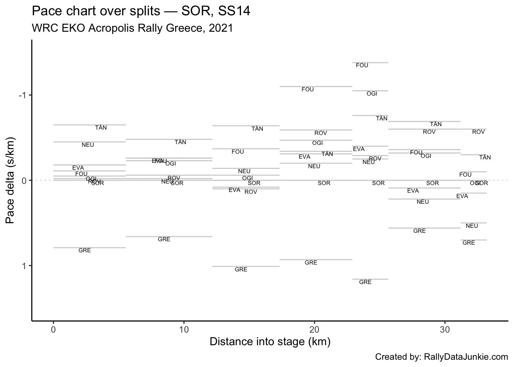
14.11 Driver Report, SS14 - FOU
FOU was in second on stage, with a time of 1526.6s and moved up one place to sixth overall.
Stage report for FOU.
| Pos | Car | Code | Time (s) | Gap | Diff |
|---|---|---|---|---|---|
| 1 | 8 | TÄN | -2.2 | -2.2 | 0.0 |
| 2 | 16 | FOU | 0.0 | 0.0 | 2.2 |
| 3 | 1 | OGI | 6.9 | 6.9 | 6.9 |
| 4 | 69 | ROV | 7.7 | 7.7 | 0.8 |
| 5 | 33 | EVA | 12.0 | 12.0 | 4.3 |
| 6 | 11 | NEU | 13.4 | 13.4 | 1.4 |
| 7 | 6 | SOR | 16.3 | 16.3 | 2.9 |
| 10 | 44 | GRE | 43.2 | 43.2 | 0.9 |
14.11.1 Rebased Split Times
FOU’s delta at each split compared to other drivers.
| code | split_1 | split_2 | split_3 | split_4 | split_5 | split_6 | split_N |
|---|---|---|---|---|---|---|---|
| TÄN | -3.0 | -4.5 | -5.9 | -1.7 | 0.0 | -1.8 | -2.2 |
| FOU | 0.0 | 0.0 | 0.0 | 0.0 | 0.0 | 0.0 | 0.0 |
| OGI | 0.3 | 0.5 | 2.1 | 5.6 | 6.5 | 6.7 | 6.9 |
| ROV | 0.5 | 1.8 | 4.2 | 7.0 | 10.0 | 8.7 | 7.7 |
| EVA | -0.4 | -0.4 | 1.9 | 6.3 | 9.0 | 11.5 | 12.0 |
| NEU | -1.9 | -0.3 | 0.9 | 5.9 | 9.0 | 12.2 | 13.4 |
| SOR | 0.6 | 2.3 | 4.2 | 10.3 | 14.1 | 16.1 | 16.3 |
| GRE | 5.0 | 11.1 | 18.2 | 29.5 | 36.5 | 41.6 | 43.2 |
14.11.2 Off-the-Pace Chart
Accumulated stage time deltas at each split:
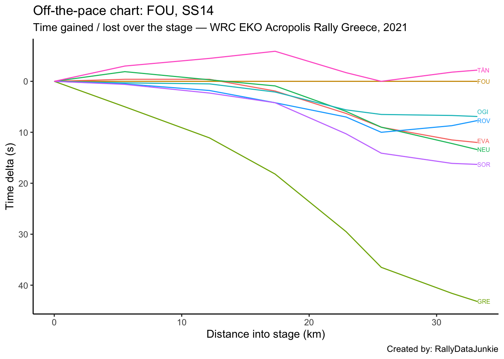
14.11.3 Within-Split Duration Deltas
FOU’s delta in time to complete each split section compared to other drivers:
| code | split_1 | split_2 | split_3 | split_4 | split_5 | split_6 | split_N |
|---|---|---|---|---|---|---|---|
| TÄN | -3.0 | -1.5 | -1.4 | 4.2 | 1.7 | -1.8 | -0.4 |
| FOU | 0.0 | 0.0 | 0.0 | 0.0 | 0.0 | 0.0 | 0.0 |
| OGI | 0.3 | 0.2 | 1.6 | 3.5 | 0.9 | 0.2 | 0.2 |
| ROV | 0.5 | 1.3 | 2.4 | 2.8 | 3.0 | -1.3 | -1.0 |
| EVA | -0.4 | 0.0 | 2.3 | 4.4 | 2.7 | 2.5 | 0.5 |
| NEU | -1.9 | 1.6 | 1.2 | 5.0 | 3.1 | 3.2 | 1.2 |
| SOR | 0.6 | 1.7 | 1.9 | 6.1 | 3.8 | 2.0 | 0.2 |
| GRE | 5.0 | 6.1 | 7.1 | 11.3 | 7.0 | 5.1 | 1.6 |
14.11.4 Within-Split Pace Deltas
| code | split_1 | split_2 | split_3 | split_4 | split_5 | split_6 | split_N |
|---|---|---|---|---|---|---|---|
| TÄN | -0.54 | -0.23 | -0.27 | 0.75 | 0.62 | -0.32 | -0.20 |
| FOU | 0.00 | 0.00 | 0.00 | 0.00 | 0.00 | 0.00 | 0.00 |
| OGI | 0.05 | 0.03 | 0.31 | 0.63 | 0.33 | 0.04 | 0.10 |
| ROV | 0.09 | 0.20 | 0.47 | 0.50 | 1.09 | -0.23 | -0.50 |
| EVA | -0.07 | 0.00 | 0.45 | 0.79 | 0.98 | 0.45 | 0.25 |
| NEU | -0.34 | 0.24 | 0.23 | 0.90 | 1.12 | 0.58 | 0.60 |
| SOR | 0.11 | 0.26 | 0.37 | 1.10 | 1.38 | 0.36 | 0.10 |
| GRE | 0.90 | 0.92 | 1.38 | 2.03 | 2.54 | 0.92 | 0.80 |
14.11.5 Within-Split Pace Map
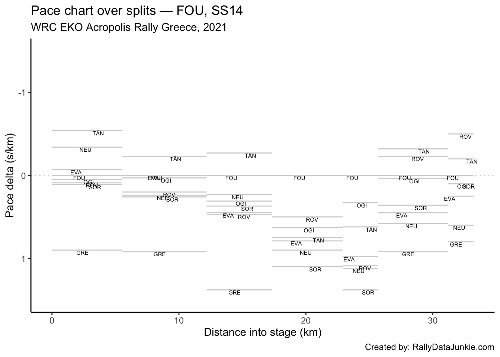
14.12 Driver Report, SS14 - LOU
No stage report for LOU.